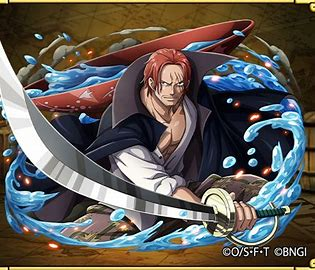

Personal information
- Name:Monkey.D.Luffy
- age:19
- Title:YONKO/SUN GOD
- favourite food:meat

Hover here to view more about luffy
Monkey D. Luffy is the captain of the Straw Hat Pirates, and dreamt of being a pirate since childhood from the influence of his idol and mentor Red-Haired Shanks. At the age of 17, Luffy sets sail from the East Blue Sea to the Grand Line in search of the legendary treasure, One Piece, to succeed Gol D. Roger as "King of the Pirates"
Personal information
- Name:Red-Haired-Shanks
- age:40
- Title:YONKO
- favourite:Alchol

Hover here to view more about shanks
"Red-Haired" Shanks,[9] commonly known as just "Red Hair",[12] is the chief[5] of the Red Hair Pirates[2] and one of the Four Emperors that rule over the New World.[3] Having sailed with the legendary Roger Pirates since he was an infant, Shanks would begin his pirate career on their ship as an apprentice alongside Buggy, before forming his own crew following Roger's death